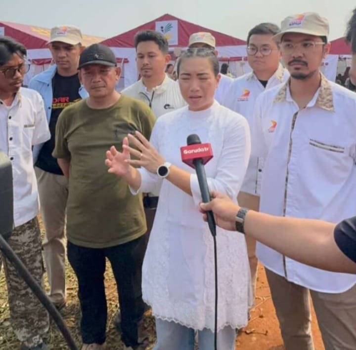

Rahayu Saraswati Imbau Anak Muda Jadi Pengusaha: Realita atau Ilusi?
“Kalau punya kreativitas, jadilah pengusaha. Jadilah entrepreneur daripada ngomel nggak ada kerjaan. Bikin kerjaan buat teman-teman. Kalau lo bisa masak, bikinlah bisnis kuliner. Bisa jahit, bikinlah bisnis fesyen.”